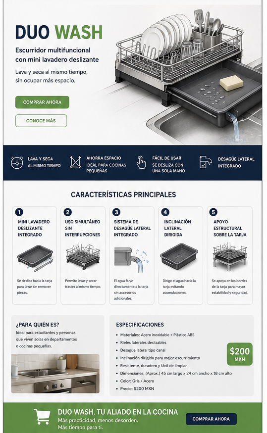

Características principales
Mini lavadero deslizante
El mini lavadero se desliza fácilmente hacia la tarja sin desmontar piezas.

Uso simultáneo
Permite lavar y secar trastes al mismo tiempo.

¿Por qué DuoWash?
DuoWash transforma un escurridor tradicional en una solución multifuncional. Optimiza espacio, mejora la organización y facilita las actividades diarias en la cocina.